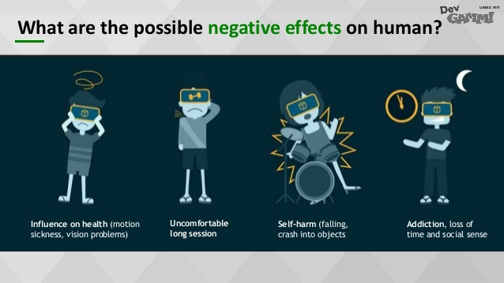

Dangers of VR
With this new technology there are plenty of dangers. Such as headaches, eye strain, motion sickness, dizziness, anxiety, and nausea. These can be reduced by the amount of time exposed to VR, but some may not experence any of these at all. It varies from person to person what negitive effects they may or may not experence.
